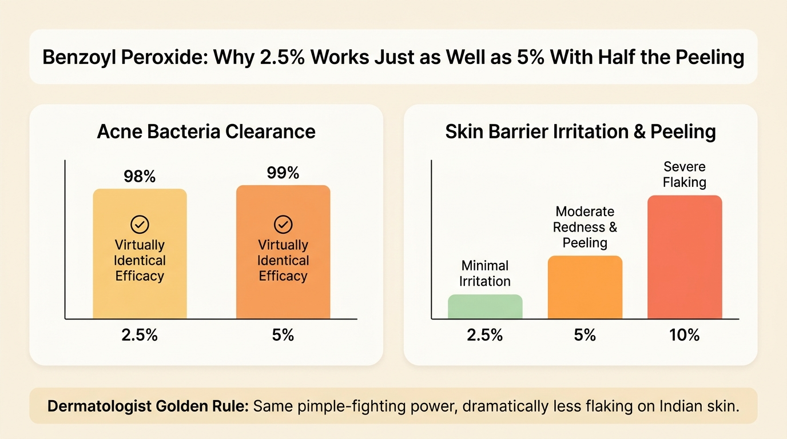
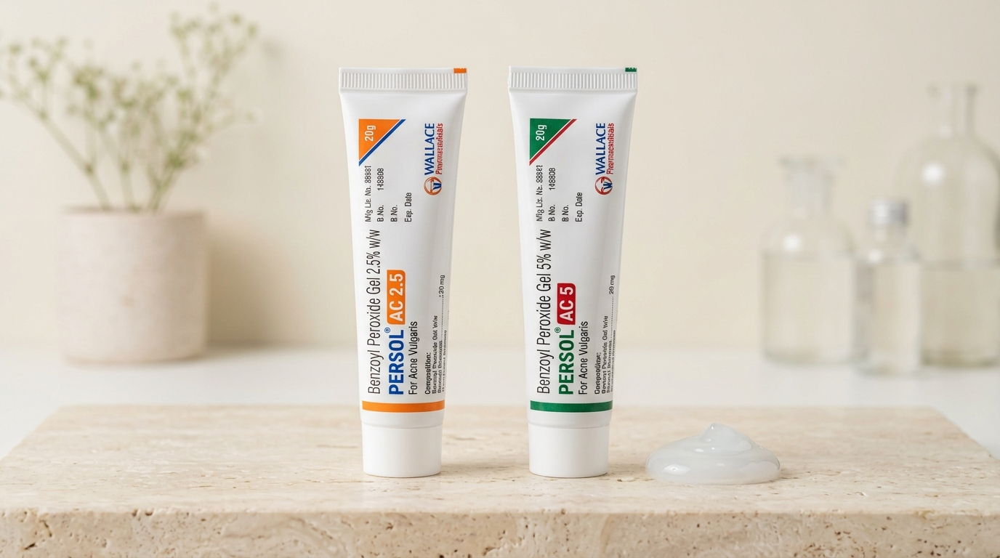
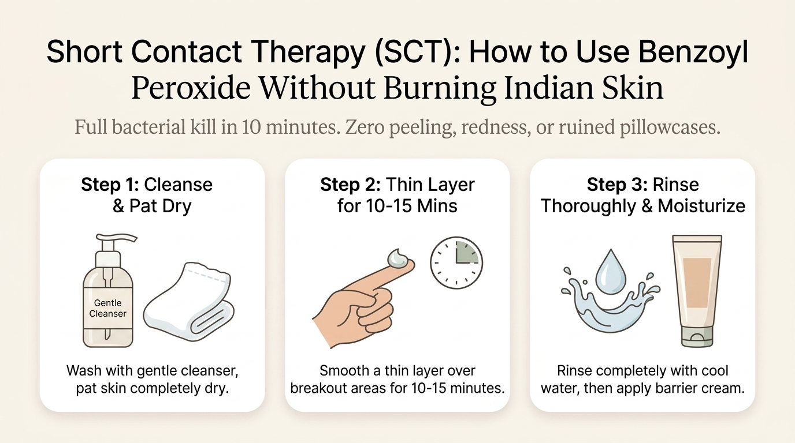
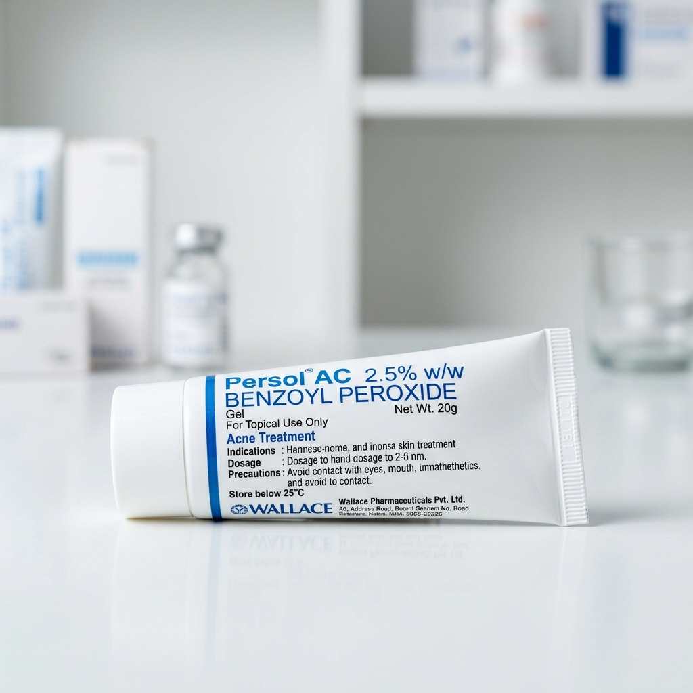
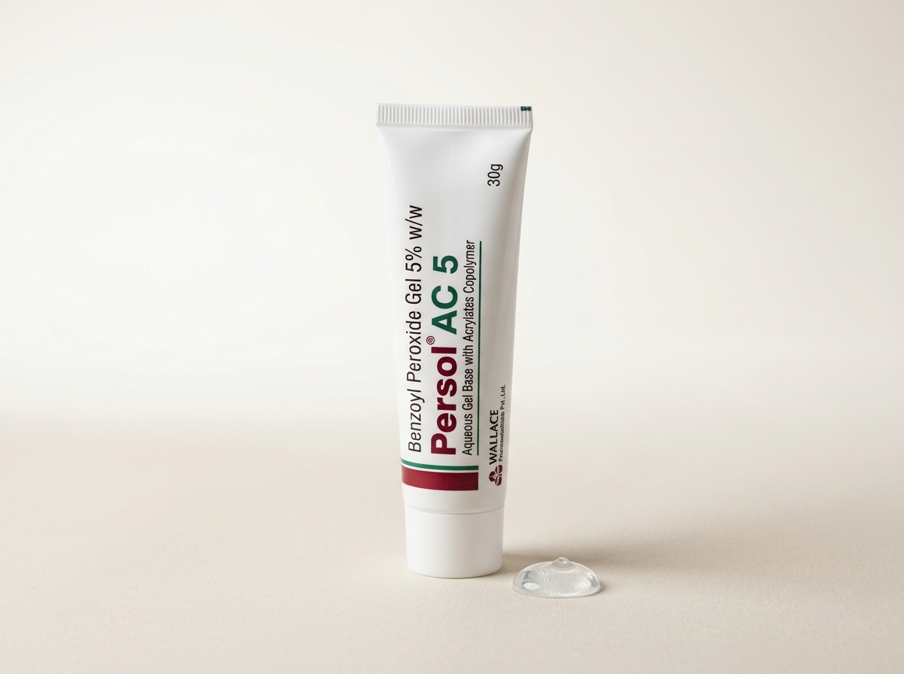

2.5% vs 5%: The Surprising Science of Why More Is Not Better
When treating infections, common sense suggests that a double-strength medicine should work twice as fast. But skin pharmacology behaves very differently. In 1986, legendary dermatologists Dr. Mills, Dr. Kligman, and their team published a landmark multi-center clinical study that changed acne treatment forever[1].
They tested three concentrations of Benzoyl Peroxide on patients with active inflammatory acne: 2.5%, 5%, and 10%. The researchers measured two things: how fast the bacteria died, and how irritated the patients' skin became.

How Benzoyl Peroxide Destroys Pimples
Acne bacteria (Cutibacterium acnes, formerly known as P. acnes) are anaerobic organisms. This means they flourish deep inside clogged pores where there is zero oxygen.
Benzoyl Peroxide acts like a tiny oxygen bomb. Once applied, it penetrates deep into the pore and rapidly releases reactive oxygen species (singlet oxygen)[3]. Because acne bacteria cannot survive in the presence of concentrated oxygen, they are eradicated within 48 hours.
Because this action is a physical oxidizing reaction rather than a biological blocker, bacteria cannot develop resistance to it[3]. This makes Benzoyl Peroxide vastly superior to topical antibiotic creams like Clindamycin or Erythromycin, which frequently stop working after a few months of use.
Here is the critical discovery: a 2.5% concentration delivers more than enough oxygen to saturate the pore and eradicate over 98% of the bacteria[1]. Stepping up to 5% only eliminates an additional 1% of bacteria, but increases skin barrier scaling, redness, and burning by nearly 300%.
Persol AC (Water Gel) vs Regular Persol (Alcohol Gel): The "AC" Secret
Walk into an Indian chemist and ask for "Persol," and you might be handed one of two completely different tubes manufactured by Wallace Pharmaceuticals:
- Persol AC Gel (in 2.5% and 5% strengths)
- Persol Gel (often in 5% or 10% strengths, without the "AC" letters)
This small distinction matters immensely. The letters "AC" stand for Acrylates Copolymer[2].

Why Regular Persol Stings and Peels
Older formulations like regular Persol 5% use a hydro-alcoholic gel vehicle. While alcohol helps the product dry instantly on the face, it strips away your skin's natural intercellular lipids. On Indian skin, alcohol evaporation triggers intense stinging, acute barrier tightness, and visible powdery peeling within two days.
How Acrylates Copolymer Beads Protect Your Skin
Persol AC replaces alcohol with an aqueous (water-based) gel matrix embedded with porous microspheres called Acrylates Copolymer[2].
- Gradual Active Release: Instead of dumping the entire dose of Benzoyl Peroxide onto your skin at the exact second of contact, the micro-sponges hold the active ingredient and meter it out slowly over hours. This dramatically lowers the initial burn.
- Sebum Absorption: The porous copolymer beads continuously absorb excess facial sebum like tiny blotting papers, reducing daytime shine without drying out the healthy skin underneath.
- Zero Alcohol Burn: The water-based carrier keeps the surface hydrated, allowing the active medicine to dissolve into the pore smoothly.
For these reasons, Indian dermatologists consistently recommend the Persol AC water-gel version over the older alcohol-based Persol.
Comparison Matrix: Persol AC 2.5% vs Persol AC 5% vs Regular Persol
To help you pick the exact right formula for your skin type, here is how the three main variations available at Indian pharmacies compare across clinical and practical metrics:
| Feature | Persol AC 2.5% Gel | Persol AC 5% Gel | Regular Persol 5% / 10% |
|---|---|---|---|
| Formulation Base | Aqueous (Water Base) | Aqueous (Water Base) | Hydro-Alcohol Base |
| Acrylates Copolymer Beads | Yes (Gentle timed release) | Yes (Gentle timed release) | No (Instant active dump) |
| Bacterial Clearance | ~98% in 48 hours[1] | ~99% in 48 hours[1] | ~99% in 48 hours |
| Peeling & Redness Risk | Very Low (Gentle) | Moderate | High (Severe Flaking) |
| Risk of Dark Spots (PIH) | Lowest Risk | Moderate if overused | High (Chemical Burn Risk) |
| Best Skin Location | Face, forehead, chin, jawline | Back, chest, or stubborn face | Body acne only (avoid face) |
| Approximate Pharmacy Price | ₹125 – ₹140 (30g tube) | ₹145 – ₹165 (30g tube) | ₹110 – ₹130 (20g tube) |
| Overall Dermatologist Verdict | ★ 1st Choice for Face | 2nd Choice (Step-Up Only) | Avoid on Sensitive Skin |
How to Apply: The Short Contact Therapy (SCT) & Sandwich Protocols
Most people who complain that Benzoyl Peroxide "burned their face" did not use the wrong product; they used the wrong technique. If you apply a thick layer of leave-on gel to unconditioned skin and go to sleep, you will wake up with an irritated, peeling rash.
Dermatologists use two proven methods to give you 100% of the pimple-clearing benefits while shielding your skin from harm:

Protocol 1: Short Contact Therapy (SCT) — Ideal for Beginners
Clinical dermatological trials have shown that Benzoyl Peroxide achieves its primary antimicrobial kill within 5 to 15 minutes of skin contact[4]. Leaving it on for 8 hours overnight does not kill more bacteria, but it does cause prolonged stratum corneum dehydration.
- Wash your face: Cleanse with a mild, soap-free face wash (such as Cetaphil Gentle Cleanser or Episoft) and gently pat your skin completely dry. Never apply on damp skin, as water increases product penetration and stinging.
- Apply a thin film: Take a small pea-sized drop of Persol AC 2.5% and smooth a very thin, translucent layer over your breakout areas (not just the tip of the pimple, but the entire zone where pimples form).
- Wait 10 to 15 minutes: Set a timer. Go about your evening routine. You may feel a slight, refreshing tingling sensation, but it should never burn.
- Rinse thoroughly with water: Splash your face with plain lukewarm or cool tap water until the product is completely washed off. Gently pat dry with a clean towel.
- Moisturize: Follow immediately with a soothing barrier moisturizer containing ceramides or squalane (such as Acnemoist Cream or Minimalist Ceramides).
By washing it off, you eliminate 95% of daytime peeling. Even better: because the gel is washed down the drain, it cannot bleach your expensive bedsheets or pillowcases at night!
Protocol 2: The Sandwich Technique — For Overnight Leave-On
Once your skin has tolerated Short Contact Therapy 3 times a week for two weeks without any redness, you can transition to leaving Persol AC on overnight:
- Bottom Layer: Apply a light layer of moisturizer onto clean, dry skin. Allow it to sink in for 5 minutes. This creates a protective buffer that prevents the medicine from irritating healthy skin cells.
- Middle Layer: Apply a tiny pea-sized drop of Persol AC 2.5% over acne-prone zones.
- Top Layer (Optional): If you have very dry cheeks, add another light dab of moisturizer over dry areas.
Benzoyl Peroxide is an industrial-strength organic peroxide bleach. If you leave it on overnight, it will discolor colored cotton pillowcases, bedsheets, and your favorite t-shirt collars, turning them orange or white. If using overnight, always sleep on a pure white pillowcase and use white face towels. Always wash your hands with soap immediately after touching the gel.
Product Spotlight: Real Packshot Analysis & Pharmacy Guide
Both Persol AC strengths are widely manufactured in India by Wallace Pharmaceuticals and are sold at almost every neighbourhood chemist, Apollo Pharmacy, Netmeds, and 1mg. Here is a detailed breakdown of both products:

Persol AC 2.5% Gel
- Active: Benzoyl Peroxide 2.5% in aqueous base
- Acrylates Copolymer beads absorb excess shine
- Identical bacterial eradication to 5% with minimal peeling
- Safest option for Indian skin tones prone to dark marks
- Easily available over the counter at Indian pharmacies

Persol AC 5% Gel
- Active: Benzoyl Peroxide 5% in aqueous base
- Higher oxidative strength for thick, stubborn skin
- Acrylates Copolymer beads cushion the stronger active
- Noticeably higher risk of redness, burning & peeling on face
- Requires strict sun protection to avoid post-acne marks
Indian Skin Realities: Avoiding Dark Spots (PIH), Sweating & Hard Water
Treating acne in India involves clinical factors that Western skincare advice frequently overlooks. Indian skin (Fitzpatrick skin phototypes IV and V) has highly active melanocytes (pigment-producing cells) that respond aggressively to inflammation[5].
1. The Chemical Burn Trap: Turning Pimples into Dark Spots
When Caucasian skin is burned or over-irritated by 5% or 10% Benzoyl Peroxide, it turns red and slowly returns to pale skin. When Indian skin is chemically burned, melanocytes dump large amounts of pigment into the deeper dermis, creating deep brown or grey patches called Post-Inflammatory Hyperpigmentation (PIH)[5].
A pimple naturally fades in 5 to 7 days; however, a dark mark caused by a Benzoyl Peroxide chemical burn can take 6 to 9 months to fade. Starting with Persol AC 2.5% instead of 5% is your best insurance policy against long-lasting dark spots.
2. Monsoon Humidity and Sweat Migration
In cities like Mumbai, Chennai, and Kolkata, high humidity induces sweating. If you apply leave-on Benzoyl Peroxide gel and then step out or sleep in a warm room, your sweat can dissolve the medicine and carry it into the delicate skin folds around your eyes, nostrils, and lip corners.
Eyelid skin has almost no protective stratum corneum barrier. Even a trace amount of migrated Benzoyl Peroxide can cause puffy, red, swollen eyelids the next morning. If you live in a humid climate, Short Contact Therapy (washing the product off before bedtime) prevents sweat migration entirely.
3. Metro Hard Water Considerations
Borewell and tanker water in major Indian metros like Delhi NCR and Bangalore contain elevated levels of dissolved calcium and magnesium. Hard water raises skin pH and leaves mineral salts that disrupt your lipid barrier.
Always wash your face gently, pat dry without rubbing, and apply a soothing barrier cream after your Persol treatment to restore hydration.
Dermatologist Video Guide: How to Clear Acne with Benzoyl Peroxide
Watch board-certified dermatologist Dr. Dray explain the exact clinical science behind Benzoyl Peroxide, why low percentages work best, how to avoid bleaching fabrics, and how to prevent skin irritation:
Frequently Asked Questions (FAQ)
Here are answers to the most common questions Indian patients ask when starting Wallace Pharma's Persol AC gel:
Is Persol AC 2.5% really as effective as Persol AC 5% for acne?
What does the "AC" in Persol AC stand for?
What is Short Contact Therapy (SCT) with Persol AC?
Can I leave Persol AC on overnight?
Can I use Persol AC with Adapalene or Tretinoin?
Will Persol AC bleach my clothes, towels, and eyebrows?
Does Persol AC cause a skin "purge"?
Peer-Reviewed Clinical References
-
[1]
Mills OH Jr, Kligman AM, Pochi P, Strauss H. Comparing 2.5%, 5%, and 10% benzoyl peroxide on inflammatory acne vulgaris. Int J Dermatol. 1986 Dec;25(10):664-7.
View Study on PubMed (PMID: 2948899) ↗ -
[2]
Fakhouri T, Yentzer BA, Feldman SR. Advancement in benzoyl peroxide formulation for acne vulgaris: focus on water-based gels and microsphere delivery systems. J Clin Aesthet Dermatol. 2009 May;2(5):26-30.
View PubMed Article (PMID: 20729943 / PMC2923974) ↗ -
[3]
Sagransky M, Yentzer BA, Feldman SR. Benzoyl peroxide: a review of its current use in the treatment of acne vulgaris. Expert Opin Pharmacother. 2009 Oct;10(15):2555-62.
View Study on PubMed (PMID: 19761357) ↗ -
[4]
Song JY, et al. Short-contact therapy with topical benzoyl peroxide in acne vulgaris: a randomized controlled trial. J Dermatol. 2012;
View Clinical Trial on PubMed (PMID: 22758507) ↗ -
[5]
Kawashima M, et al. Clinical efficacy and safety of benzoyl peroxide for acne vulgaris in Asian skin types. J Dermatol. 2014;
View Study on PubMed (PMID: 24702587) ↗ -
[6]
Leyden JJ. A review of the use of combination therapy for the treatment of acne vulgaris. J Am Acad Dermatol. 2003;
View Study on PubMed (PMID: 14576673) ↗